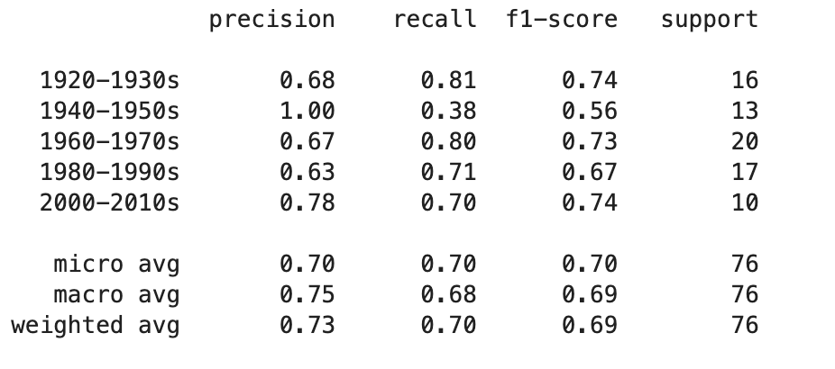

App
Overview
For this task, I wanted to build a clothing style classifier by decade. I could not find an existing
dataset labeling attire style by decade, so I had to build one manually from Google images.
Once this tedious process was complete, I could use transfer learning on a pre-trained deep-learning
model to build my classifier.
Data Collection
The magician's secret of machine learning is dataset quality ultimately determines the quality of
results. I could not simply pull all the results from a Google search query because there was too
much variation across images. I needed relatively standardized images, individuals with a full outfit
with minimal background. The more variation the more challenging the learning task and ultimately more
images required. I manually built a dataset containing 100 images per category. I restricted the
images to woman's attire and combined decades. There were simply far more results for women and even
then I did not have enough images per decade, so I combined what I felt were similar decades together.
To further combat the lack of data, I augmented existing data by applying a horizontal flips to images.
Machine Learning
Data was the limiting factor, but there was still some doing on the ML front. The only way to build an
image classifier without tens of thousands of images is through transfer learning. Transfer learning
takes a pre-trained model and replaces the final classification layers. Selecting the pre-trained model
and structure of the final layers are hyperparameters to optimize on. In this case, I selected the
VGG16 model with final layers of flatten, dropout(.75) and finally a dense layer (5, activation=softmax).
The dropout layer was added to combat model overfitting. My selection process was manual, but advanced
methods of Bayesian optimization and genetic algorithms can perform a more robust hyperparameter search. In this case, I doubt such methods would be fruitful because there is a cap on performance given the available data.
Results
The model achieved a categorical accuracy of 73% on the validation set. Accuracy is an appropriate
performance metric since the categories were balanced. For more detail see the classification report
below

The main take of this report is the 1940-1950s category has low recall, lots of false negatives. It is thus the main
source of error in model.
Future Work
Other than building a larger dataset, focusing on specific elements of clothing could achieve better
results. For, example focusing on pant legs to identifying bell bottoms then the style as 70s. With
enough data, an ML algorithm would learn this on its own, but with directed training better result can
be achieved with fewer images. Training a model to identify pant legs and collars etc. is not trivial,
but work has been in this area that I can build from, see DeepFasion.
The same method to classify styles by decades can be used for other types of categories too, like
sub-cultures of hippie, punk, etc. or formality like semi-formal, business-casual, etc. This model
forms a nice base of work to expand on.